CodeQuest, built to learn by making.
Three rendered concepts, an iterated selection, and the actual Laravel UI for comparison. The selected interface is a working visual prototype. Academic results are examples.
The concepts
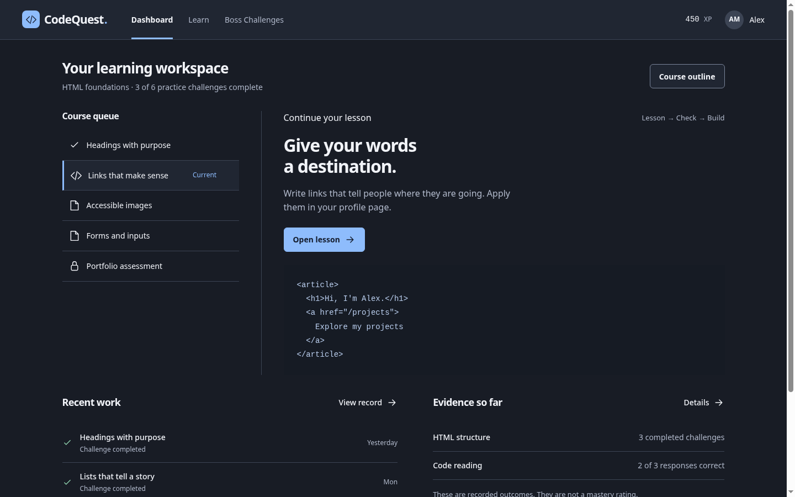
Compact and clear. Rejected as the whole-product direction: code and queue dominate before the learning objective.
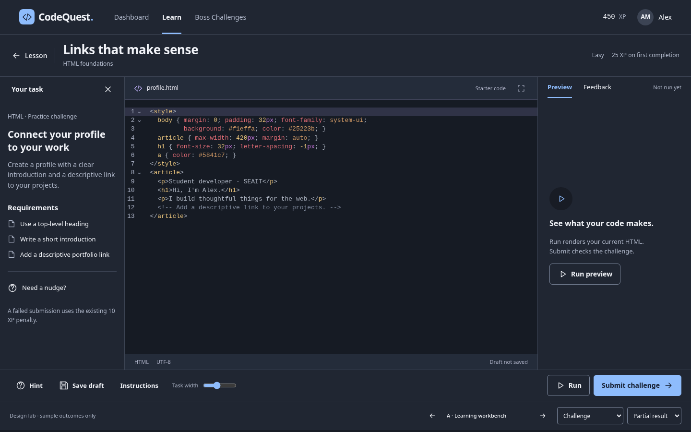
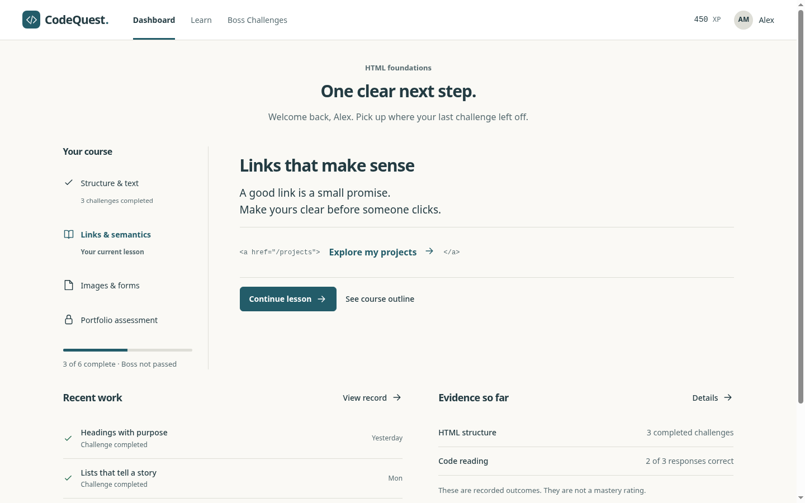
Readable and quiet. Rejected: sparse Dashboard, compressed task strip, and too much empty preview space.
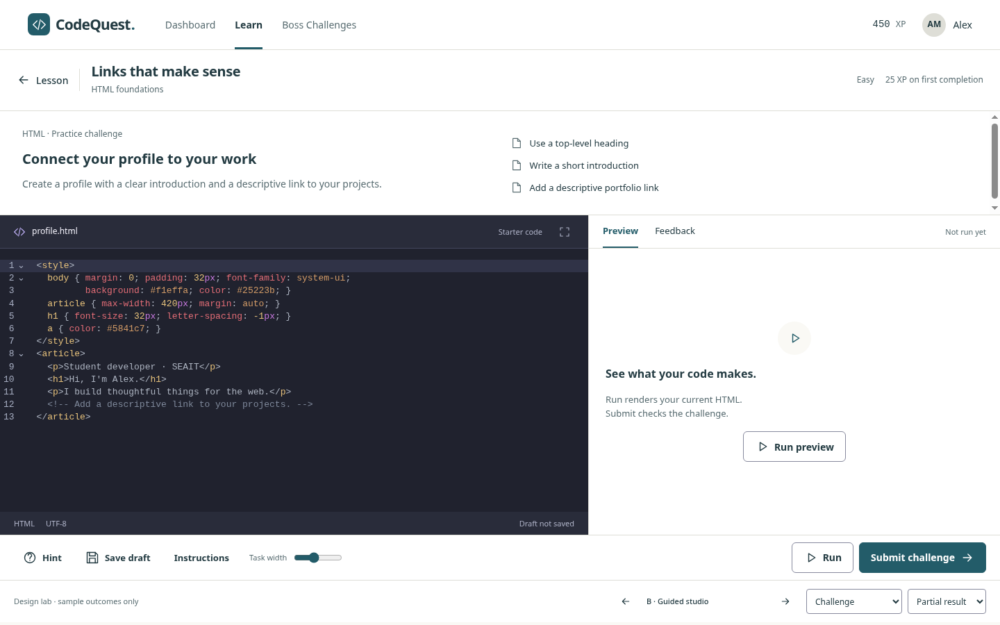
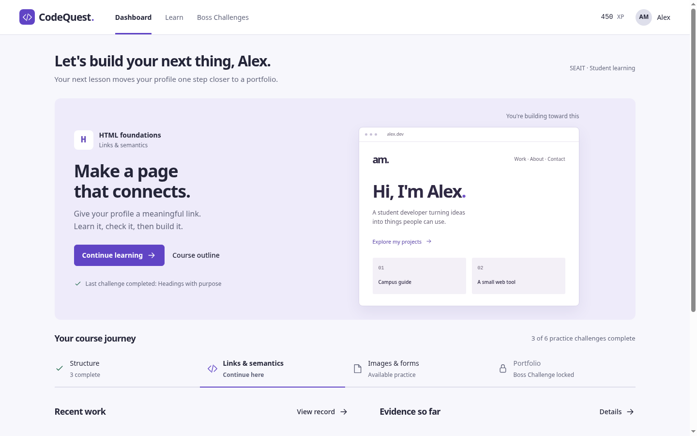
Selected for its link between concepts and a real artifact. First version was too tall and hid requirements; both were redesigned.
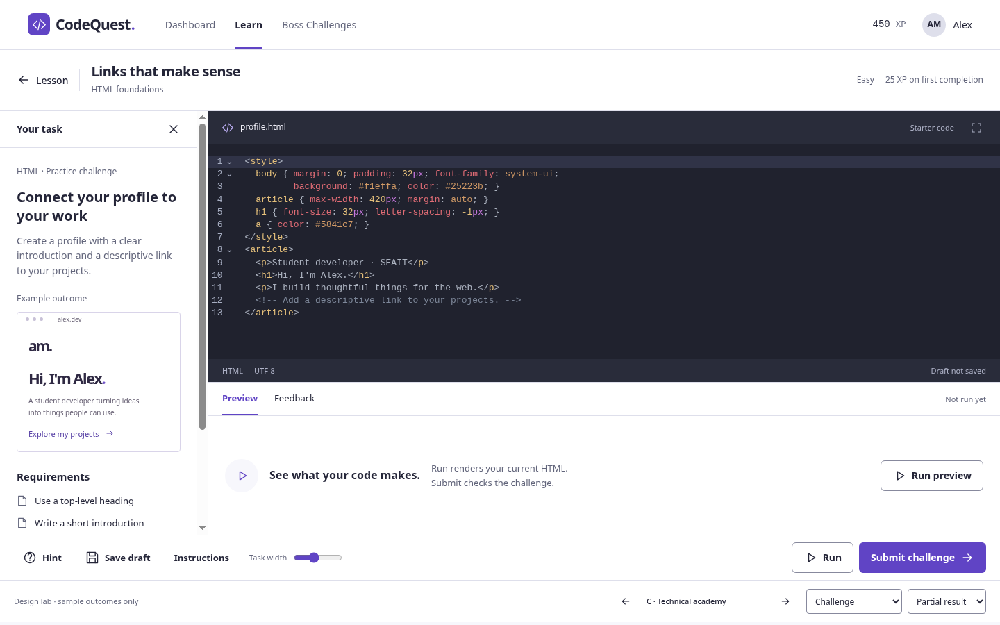
Dashboard: current → selected

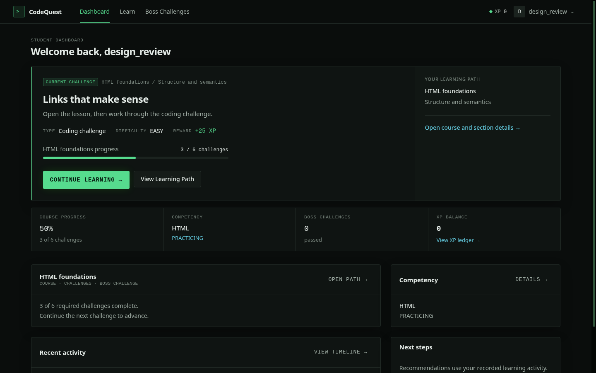
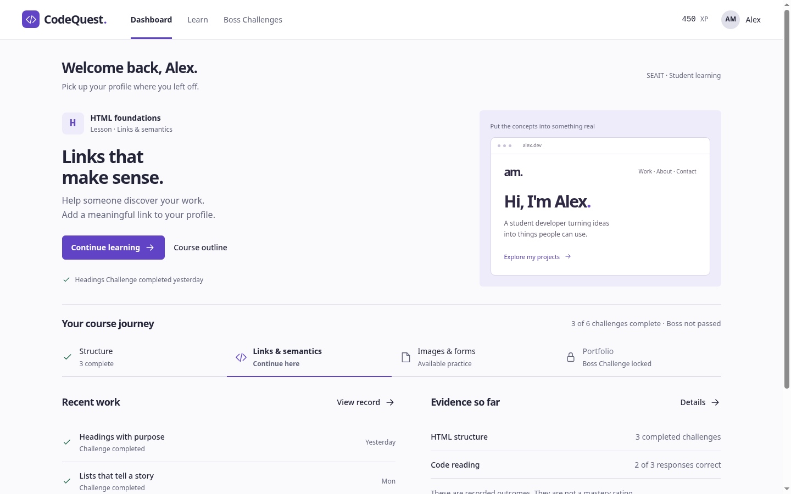
Challenge: current → selected

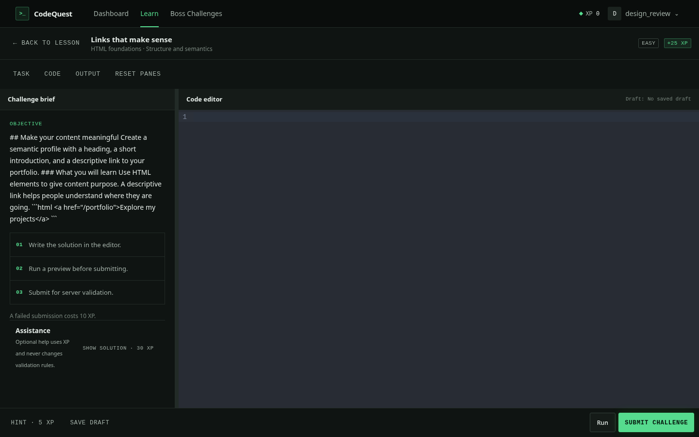
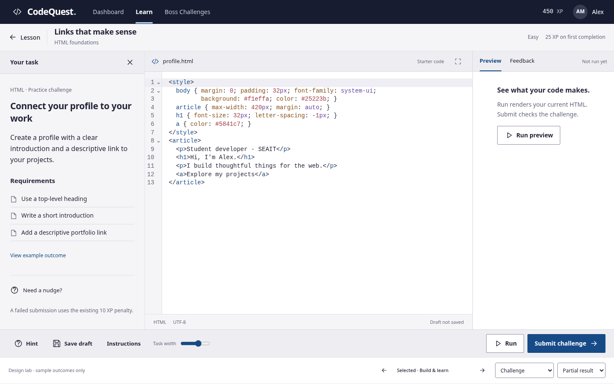
Connected learning screens
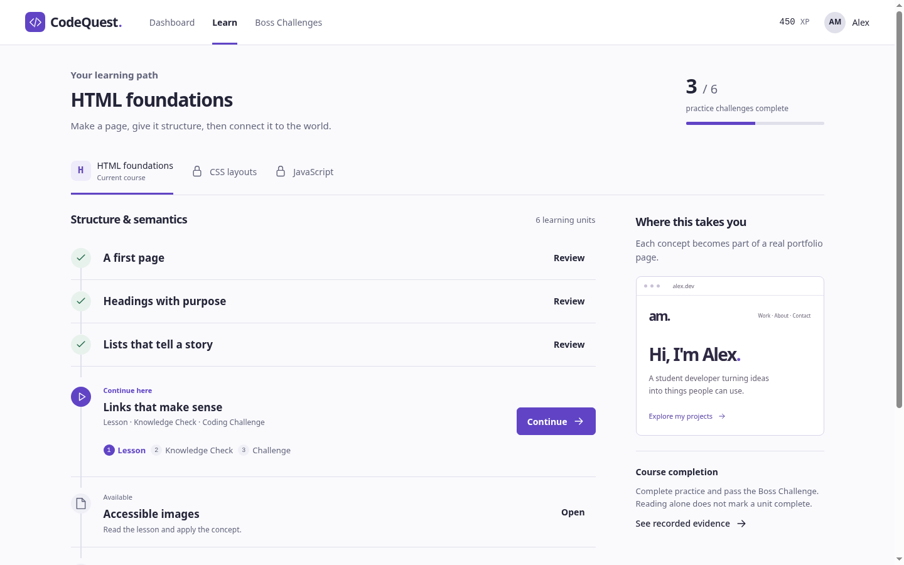
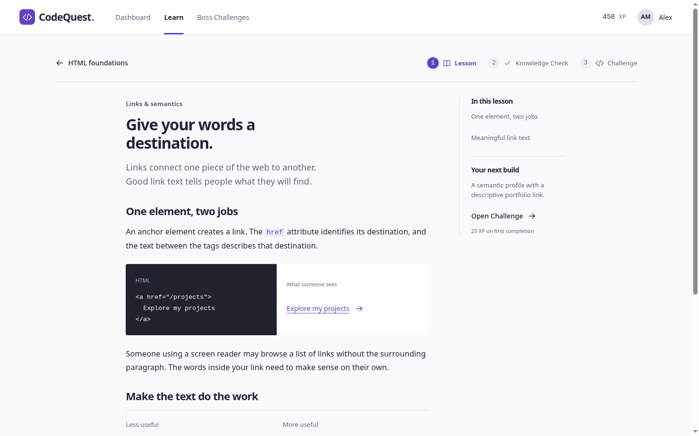
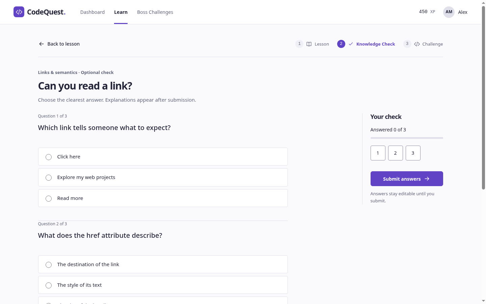
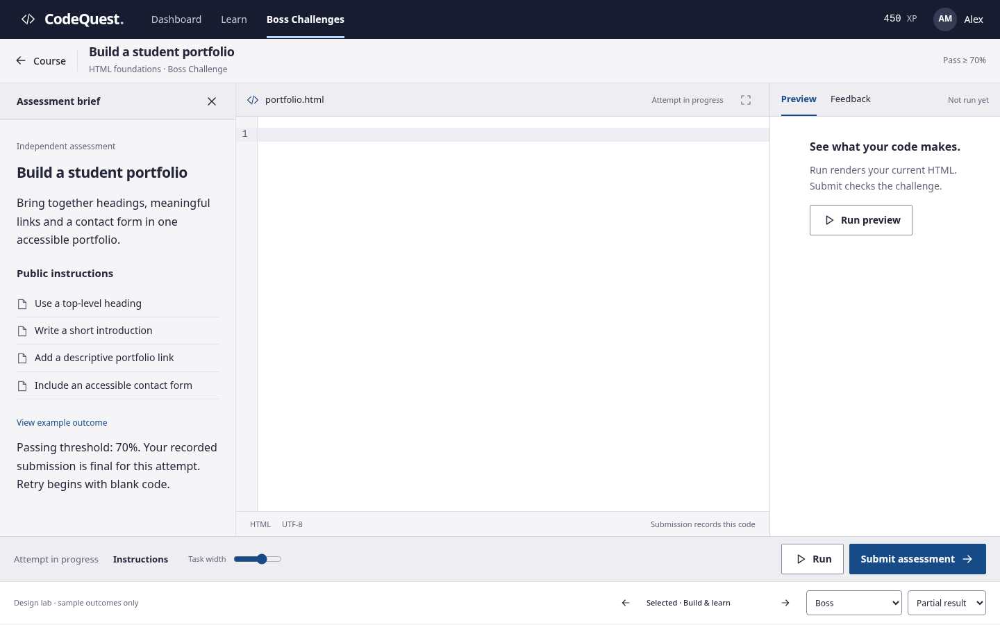
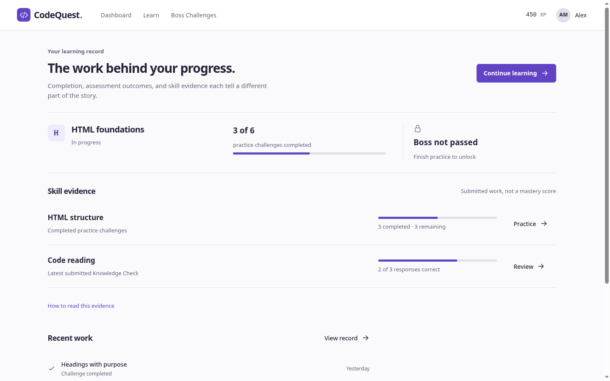
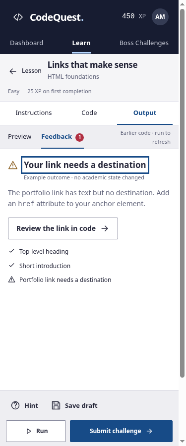
Other captures cover 1024 × 768, tablet and phone widths, plus assessment entry, locked, failed, passed, and service-error examples. Screenshots capture a viewport; the live interface scrolls and responds to actions.